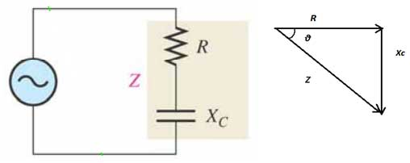

The analysis of RC circuit in DC is very simple as the parameters are linear in nature. But AC waveform is sinusoidal, and several complications like phase angle, per unit impedance, power factor, reactance etc are the considerable factor. Also the change when R and C are connected in series and in parallel. The voltage across a capacitor lags the current flowing into it. Hence the power factor in a capacitive load is leading.
The phase angle is the phase difference between the total current and the source voltage. The impedance of a series RC circuit is determined by both the resistance (R) and the capacitive reactance (XC).In this circuit, the impedance is Z= R + ZC = R-jXC.
Hence the magnitude of impedance is Z = √(R2 + X2) and the phase angle is Ρ= tan-1(XC/R).
From KVL, the sum of the voltage drops must equal the applied voltageVS. Since VR and VC are 90 degrees out of phase with each other, they must be added as phasor quantities i.e. VS = √(VR + VC) and Ρ = tan-1(XC/R). The capacitive reactance X_C=1/2πfC where f is the frequency of the supply. So as the supply frequency increases
- R remains constant.
- XC decreases.
- Z decreases.
- Ρ decreases.
Let us now consider a parallel RC circuit.
 by
by {kind=link}